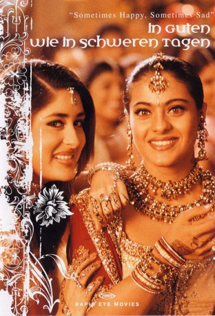
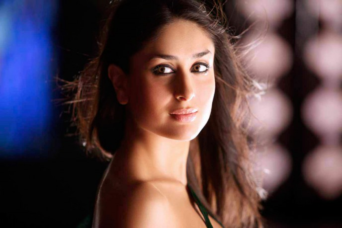

#1954 In guten wie in schweren Tagen
Alternativ: Kabhi Khushi Kabhie Gham...
 
 IMDB-Wertung: 7.5 / 10
IMDB-Wertung: 7.5 / 10  Metascore: 0
Metascore: 0 
Die einst so glückliche Familie Raichand ist entzweit; der älteste Sohn Rahul widersetzt sich der für ihn arrangierten Heirat – er hat sich nämlich in die nicht standesgemäße, quirlige Anjali verliebt. Sein Vater verstößt ihn daraufhin, und Rahul beginnt mit Anjali ein neues Leben in London. Viele Jahre später hat die Mutter den Verlust ihres ältesten Sohnes noch immer nicht verwunden, und die Familie Raichand droht nun gänzlich auseinander zu brechen. Daraufhin macht sich der jüngere Sohn Rohan auf die Suche nach seinem großen Bruder, um die Familie wieder zu vereinen …
Jahr: 2001
Dauer: 210 Minuten
FSK: 6
Land: Indien Studio: Rapid Eye MoviesTonspuren:
Untertitel: Deutsch,
Auflösung: 1080p (1920x816) Größe: 14438 MB
Genre: Drama, Musical, Liebe
Regisseur: Karan Johar
Drehbuch: Karan Johar, Sheena Parikh
Soundtrack: Babloo Chakravorty, Jatin Pandit, Lalit Pandit, Sandesh Shandilya
Darsteller:
 Amitabh Bachchan als Yashvardhan Raichand
Amitabh Bachchan als Yashvardhan Raichand- Jaya Bhaduri als Nandini Raichand
 Shah Rukh Khan als Rahul Raichand
Shah Rukh Khan als Rahul Raichand- Kajol als Anjali Sharma
- Hrithik Roshan als Rohan Raichand
-  Kareena Kapoor als Pooja Sharma
- Rani Mukerji als Naina Kapoor
- Jessey Lever als Haldiram's son
 Bharat Mistri als Yashvardhan Raichand's Secretary
Bharat Mistri als Yashvardhan Raichand's Secretary- Rahul Nath als Party Guest , uncredited
- Farida Jalal als Sayeeda
- Alok Nath als Bauji
- Johnny Lever als Haldiram
- Himani Shivpuri als Haldiram's wife
- Aryan Khan als Young Rahul
- Achala Sachdev als Daadi
- Sushma Seth als Naani
- Shashikala als
- Tamzin Griffin als
- Ramona Sunavala als Sonya
- Jeroo Writer als Tanya
- Vikas Sethi als Robbie
- Simone Singh als Rukhsaar
- Malvika Raaj als
- Holly Holdsworth als
- Kavesh Majmudar als
- Jibraan Khan als Krishi Raichand
- Ali Haji als Special Appearance
- Amith Rahman als Rajiv
- Samir Shah als Cricket Wicket Keeper
 Kishore Bhatt als Cricketer on Bench / Passerby , uncredited
Kishore Bhatt als Cricketer on Bench / Passerby , uncredited- Ian Botham als Radio Cricket Commentator , uncredited
- Parzan Dastur als Ashfaque's nephew , uncredited
- Jugal Hansraj als Rohan's Friend, Guest Appearence , uncredited
- Michael Holding als Radio Cricket Commentator , uncredited
- Shilpa Mehta als Ashfaque's mother , uncredited
- Ashutosh Singh als Ashfaque , uncredited
- Amar Talwar als Naina's dad , uncredited
Datei: X:\2001\In guten wie in schweren Tagen (2001, FSK6, 1920x816).mkv seit 09.09.2015
Festplatte: HD 1996-2002
 Es gibt insgesamt 102 Filme in der Gruppe '2001'
Es gibt insgesamt 102 Filme in der Gruppe '2001'